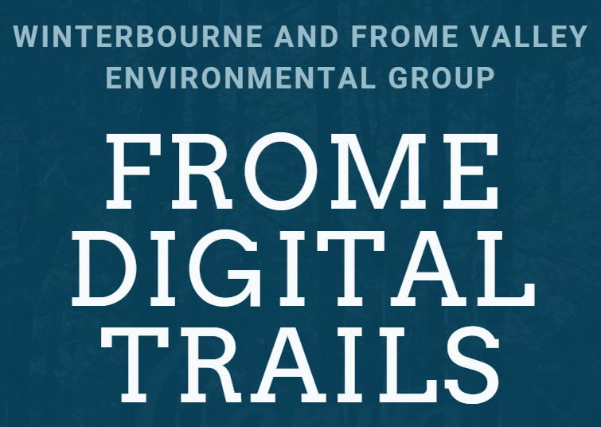

Introduction
I am Cameron and both Kseniia and I are year 3 Digital Media students
studying at the University of the West of England. As part of our
final year studies, we will be working for the UWE in-house Design
Enterprise Studio and have been granted an opportunity to work with a
selection of predetermined clients for the purpose of designing and
developing real world projects to add to our portfolios.
We both decided to assist the Frome Valley Digital Trails team to
design and develop a webapp that promotes exercise and educates users
who journey through preplanned routes. Along the routes, the intent is
for users to scan and "collect" QR codes on trees with their phones,
opening the webapp which will contain information about the tree and
surrounding habitat with audio and visual guides.

For our group roles, both Kseniia and I had already discussed our
potential roles prior to the project and so comfortably moved into a
design and developer role respectively. Despite this, we are both
happy to help each other when needed and offer support. Since we are a
two person group, there is no real leader figure within the group and
so far we have discussed everything together before making decisions.
Even though Kseniia has been the group member sending emails and the
point of contact with the client, we made sure to introduce both of us
and forward all emails to both members of the group. We also cowrite
the emails to ensure that nothing important is left out. While this
might not be efficient or effective in a much larger group, we feel
that it works for us and ensures that we both know exactly what is
going on at any given time.